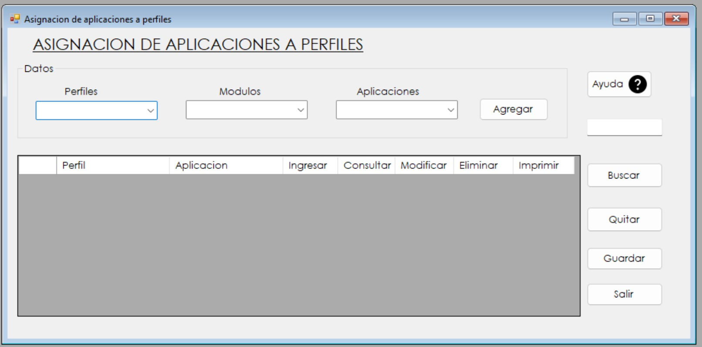
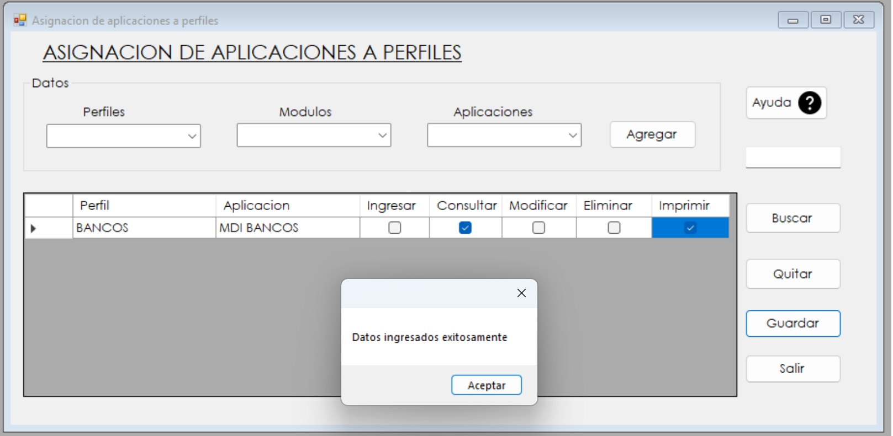

1. El formulario consta de tres listas desplegables, Perfiles, Modulos y Aplicaciones y una tabla para poder visualizar los permisos que se estan otorgando
2. Seleccionamos el perfil deseado, luego en la lista de modulos se hara un filtro para las aplicaciones, segun el modulo seleccionado se mostraran las aplicaciones de ese modulo

3. Damos clic en el boton de agregar y nos mostrara los permisos que se le pueden brindar a esa aplicacion, le damos check a los que necesitemos

4. Por ultimo le damos clic al boton Guardar y los datos son ingresados exitosamente.
5. Tambien podemos darle clic al boton buscar y podemos visualizar los registros de igual manera podemos quitar registros y salirnos del formulario.